Computing neuron (population) properties in the presence of Gaussian white noise
Contents
The functions needed to compute the properties are in
addpath('Functions\')
Neuron model and parameters
The neurons are modeled by the adaptive exponential I&F model (aEIF) that obeys the following differential equations:
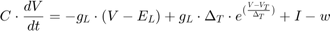
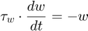
When 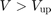, 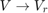 and 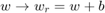.
Please note that we only allow for spike-triggered adaptation (denoted by b). In the following, we compute the mean firing rate, the variance of the interspike intervals & the mean and variance of the membrane potential in the presence of Gaussian white noise. We set the neuron parameters to be the following:
ModPar = [10.0,5.0,-70.0,2.0,-50.0,-70.0,-20.0,5.0,100.0]; % [tm,gL,EL,sf,VT,Vr,Vup,b,tw]
Mean firing rate and variance of interspike intervals
In the presence of Gaussian white noise (input 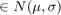), the firing rate 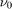 is given/approximated by

with 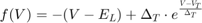. Furthermore, the variance of the interspike-intervals is given by
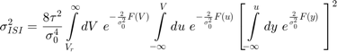
where 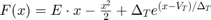 and 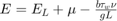.
We characterize the firing rate and the variance of the interspike intervals as a function of the external rate. Therefore, we define the external stimuli to be tested:
rext = linspace(4.0,10.0,40);
The mean and the standard deviation of the input are a function of the external stimulation defined by the external rate. We define the number of connections, N, and the postsynaptic potentials by
N = 100; J = 2;
The firing rate and the var(ISI) as a function of the external rate:
tm = ModPar(1); rate = zeros(1,length(rext)); VarISI = zeros(1,length(rext)); for i=1:length(rext) mu = (tm/1000.0)*N*rext(i)*J; sig = sqrt((tm/1000.0)*N*rext(i)*J.^2); InpPar = [mu,sig]; rate(i) = CompRate_aEIF(ModPar,InpPar,r,1); VarISI(i) = CompVarISI_aEIF(rate(i),ModPar,InpPar); end subplot(1,2,1); plot(rext,rate,'LineWidth',2); xlabel('r_{ext} (Hz)'); ylabel('rate (Hz)') subplot(1,2,2); plot(rext,sqrt(VarISI),'LineWidth',2); set(gca, 'YScale', 'log')%ylim([0,1000]) xlabel('r_{ext} (Hz)'); ylabel('\sigma_{ISI} (s)') set(gcf,'units','centimeters','position',[1,1,18,7])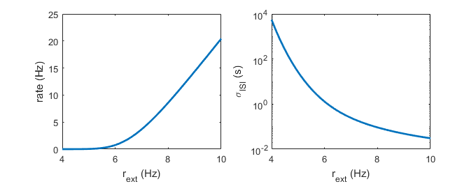
Mean and variance of the membrane potential
The probability distribution of the membrane potential is given by
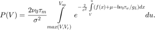
Consequently, first and second moment of the membrane potential are given by
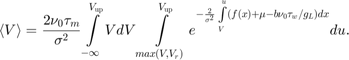
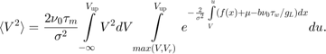
(Please note that spikes should be discarded for the computation. Therefore the upper bound should be corrected - if necessary)
Vm = zeros(1,length(rext)); Vv = zeros(1,length(rext)); for i=1:length(rext) mu = (tm/1000.0)*N*rext(i)*J; sig = sqrt((tm/1000.0)*N*rext(i)*J.^2); InpPar = [mu,sig]; [Vm(i),Vv(i)] = CompMemPotStat_aEIF(rate(i),ModPar,InpPar); end subplot(1,2,1); plot(rext,Vm,'LineWidth',2); xlabel('r_{ext} (Hz)'); ylabel('mean membrane potential (mV)') subplot(1,2,2); plot(rext,sqrt(Vv),'LineWidth',2); xlabel('r_{ext} (Hz)'); ylabel('SD of membrane potential (mV)') set(gcf,'units','centimeters','position',[1,1,18,7])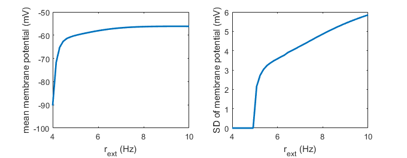
check if we would need to set the upper threshold for calculation of mean V and SD of V to V'<Vup to cut out spikes ...